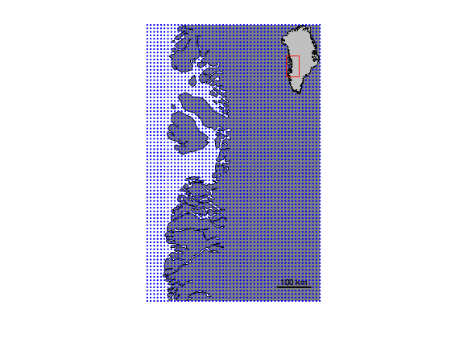
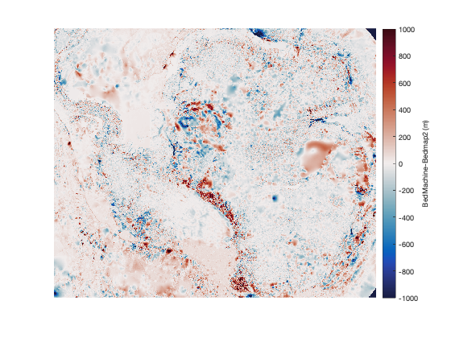

bedmachine_interp documentation
bedmachine_interp loads data from Morlighem et al.'s BedMachine datasets.
See also: bedmachine, bedmachine_data and bedmachine_profile.
Contents
Requirements
This function requires a set of Matlab tools and a Bedmachine dataset, and both will depend on where you're working. Get them here:
- For Greenland:
- For Antarctica:
Syntax
zi = bedmachine_interp(variable,lati,loni) zi = bedmachine_interp(variable,xi,yi) zi = bedmachine_interp(...,IceSheet) zi = bedmachine_interp(...,'datum',datum) zi = bedmachine_interp(...,'method',InterpMethod)
Description
zi = bedmachine_interp(variable,lati,loni) interpolates a specified BedMachine variable to the given by geo coordinates lati,loni. The variable can be:
- 'mask' 0 = ocean, 1 = ice-free land, 2 = grounded ice, 3 = floating ice, 4 = non-Greenland land
- 'surface' meters relative to EIGEN-EC4 geoid.
- 'thickness' meters
- 'bed' meters relative to EIGEN-EC4 geoid.
- 'errbed' meters
- 'source' Greenland: 0 = none, 1 = gimpdem, 2 = Mass conservation, 3 = synthetic, 4 = interpolation, 5 = hydrostatic equilibrium, 6 = kriging, 7 = RTOPO-2, 8 = gravity inversion, 10+ = bathymetry data)
- 'source' Antarctic: 1 = REMA/IBCSO, 2 = Mass conservation, 3 = interpolation, 4 = hydrostatic, 5 = Kriging, 6 = gravity inversion
- 'geoid' meters above WGS84 ellipsoid
- 'base' meters base of the ice sheet (bottom of ice shelves, but same as bed over grounded ice.)
- 'wct' meters water column thickness (derived, not an official BedMachine product.)
- 'taf' meters thickness above flotation (derived, not an official BedMachine product.)
- 'flex' dimensionless coefficient of tidal flexure (can slightly exceed 1; see Vaughan 1995 or Holdsworth 1969; derived, not an official BedMachine product; Requires Image Processing Toolbox. )
- 'head' meters freshwater equivalent, static pressure head (derived, not an official BedMachine product.)
zi = bedmachine_interp(variable,xi,yi) As above, but for polar stereographic coordinates xi,yi in meters (ps70 for Greenland; ps71 for Antarctica). The function automatically determines whether input coordinates are geo or polar stereographic via the islatlon function.
zi = bedmachine_interp(...,IceSheet) specifies either 'greenland' or 'antarctica' (default).
zi = bedmachine_interp(...,'datum',datum) specifies a datum as either 'geoid' (default) or 'ellipsoid' for wgs84.
zi = bedmachine_interp(...,'method',InterpMethod) specifies any interpolation method allowed by the interp2 function.
Example 1: A map in Greenland
Here's a grid centered on Jakobshavn Glacier. The grid is 500 km wide and 800 km tall, at 10 km resolution:
% Create the grid: [latgrid,longrid] = psngrid(69.167,-49.833,[500 800],10); % Plot the grid as blue dots: plotpsn(latgrid,longrid,'b.') % Add som context to the map: axis tight off h = greenland('patch'); uistack(h,'bottom') % sends greeland to the bottom mapzoompsn('ne','frame','off') scalebarpsn('location','se')
Get surface elevations at every grid point:
zi = bedmachine_interp('surface',latgrid,longrid); % Plot contours: [C,h] = contourpsn(latgrid,longrid,zi,0:250:3000); % Label the contour lines: clabel(C,h,'labelspacing',1e3)

Example 2: Compare BedMachine to Bedmap2
Here's a quick comparison of BedMachine to Bedmap2. Start by loading the Bedmap2 data, and since Bedmap2 and BedMachine use slightly different geoids, we'll load both to the same common WGS84 ellispoid reference:
% Get coordinates of grounding line: [gl_lat,gl_lon] = antbounds_data('gl'); % Only load enough Bedmap2 data to encompass grounding line: [lat,lon,bed_b2] = bedmap2_data('bedw',gl_lat,gl_lon);
Now bedmachine_interp makes comparison easy (but note, these are massive datasets, so it might take several seconds to a minute to interpolate):
bed_BM = bedmachine_interp('bed',lat,lon,'datum','wgs84');
Plot the difference. Below I'm using the cmocean (Thyng et al., 2016) balance colormap.
figure imagesc(bed_BM-bed_b2); axis image off caxis([-1000 1000]) cmocean balance cb = colorbar; ylabel(cb,'BedMachine-Bedmap2 (m)')
Citing this dataset
If you use BedMachine data, please cite the Morlighem paper listed below. And if this function is useful for you, please do me a kindness and cite my Antarctic Mapping Tools paper.
Morlighem M. et al., (2017), BedMachine v3: Complete bed topography and ocean bathymetry mapping of Greenland from multi-beam echo sounding combined with mass conservation, Geophys. Res. Lett., 44, doi:10.1002/2017GL074954.
Morlighem, M., E. Rignot, T. Binder, D. D. Blankenship, R. Drews, G. Eagles, O. Eisen, F. Ferraccioli, R. Forsberg, P. Fretwell, V. Goel, J. S. Greenbaum, H. Gudmundsson, J. Guo, V. Helm, C. Hofstede, I. Howat, A. Humbert, W. Jokat, N. B. Karlsson, W. Lee, K. Matsuoka, R. Millan, J. Mouginot, J. Paden, F. Pattyn, J. L. Roberts, S. Rosier, A. Ruppel, H. Seroussi, E. C. Smith, D. Steinhage, B. Sun, M. R. van den Broeke, T. van Ommen, M. van Wessem, and D. A. Young. 2019. Deep glacial troughs and stabilizing ridges unveiled beneath the margins of the Antarctic ice sheet, Nature Geoscience. doi:10.1016/j.cageo.2016.08.003.
Greene, C. A., Gwyther, D. E., & Blankenship, D. D. Antarctic Mapping Tools for Matlab. Computers & Geosciences. 104 (2017) pp.151-157. doi:10.1016/j.cageo.2016.08.003.
Author Info
This function and supporting documentation were written by Chad A. Greene of the University of Texas at Austin, October 2018.